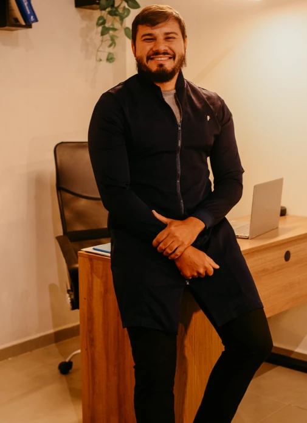
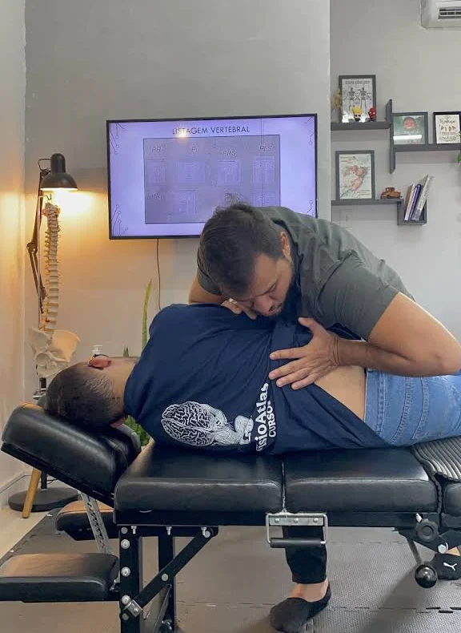
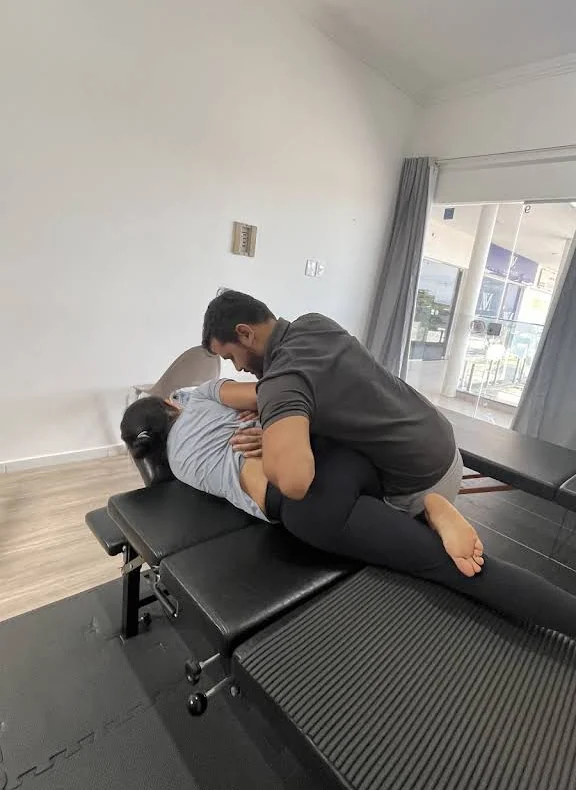
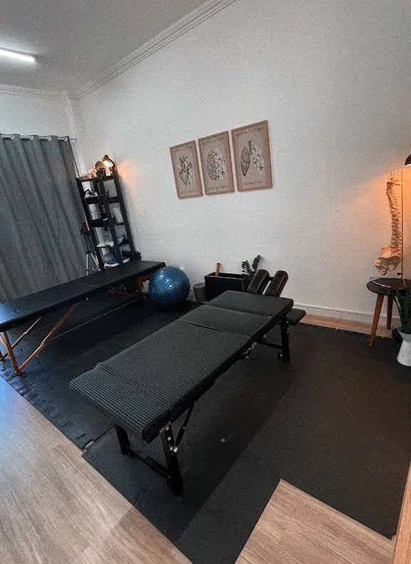

Fisioterapia
Acompanhamento para recuperar mobilidade, força e confiança nos movimentos do dia a dia.
Serraria, Maceió
Fisioterapia e quiropraxia para cuidar da sua mobilidade e ajudar você a retomar o que gosta de fazer.
Agendar pelo WhatsApp
Atendimentos
Da rotina ao esporte, a avaliação ajuda a definir por onde começar e como acompanhar sua evolução.
Acompanhamento para recuperar mobilidade, força e confiança nos movimentos do dia a dia.
Avaliação da coluna e das articulações, com técnicas manuais quando indicadas para o seu caso.
Recuperação gradual da função após uma lesão, com atenção aos movimentos que você precisa retomar no treino.
No consultório
Veja registros de técnicas manuais e do espaço onde acontecem as avaliações e sessões em Serraria.



Primeira consulta
O primeiro encontro é para conversar sobre a sua rotina, avaliar seus movimentos e definir os próximos passos.
Fale sobre quando o incômodo começou, o que ficou mais difícil e quais atividades você quer retomar.
O Jean observa como você se movimenta e avalia o que pode estar limitando as atividades que você descreveu.
Converse sobre quais formas de acompanhamento fazem sentido para o seu caso e como acompanhar a evolução.
Sobre o Jean
Fisioterapeuta, quiropraxista e professor.
Em Maceió, Jean atende presencialmente e também atua na formação de fisioterapeutas. No Instagram, compartilha conteúdos sobre anatomia, movimento e a prática da fisioterapia.
Conheça o @jeaneriksDúvidas frequentes
Envie uma mensagem pelo WhatsApp para combinar um horário. As sessões são presenciais, em Serraria, Maceió.
Você pode agendar a avaliação e conversar com o Jean sobre qual abordagem faz sentido para seu caso.
O horário informado pelo consultório aos sábados é das 8h às 16h. Confirme a disponibilidade pelo WhatsApp.
Localização e contato
Chame no WhatsApp para combinar um horário e tirar dúvidas antes da primeira consulta.
Falar com o Jean